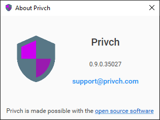
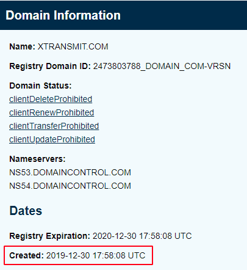

XTransmit 项目更名为 Privch，因为 XTransmit 这个名称的 com 域名已经被注册了。我是 2019 年 08 月份开源的，10 月份发了第一个 Release，前不久准备注册域名查了一下发现 xtransmit.com 已经在 2019 年 12 月被人注册了。注册商显示为 godaddy，我通过 godaddy 尝试和域名注册者取得联系，问对方是否愿意转让，可是没有得到任何回应，无奈只好放弃原名称。不过，新的名称 Privch 意义更为准确，也更加友好。

Privch 0.9.0

原名称已被注册
上图是 ICANN 查询 xtransmit.com 域名的信息，注册时间为 2019-12-30。这次更新是一些修复和调整，版本号原先是 0.8.1，由于更新名称版本号升到 0.9.0。此外，项目相关的仓库都将移到 Privch 下，GitHub 会重定向旧仓库的访问，不过最好更新一下 git remote url。
修复了一个替换服务器时的状态同步问题，Privch 的服务器列表没有重复项，当（扫码、导入等）添加的服务器已经存在时 Privch 会替换旧的服务器。新版本修复了连接状态同步的问题，当这个服务器当前正在被使用时，程序会使用新的参数重新连接服务器。
提升了单实例功能，Privch 的主要作用是提供服务，不会运行多个进程。当程序已经在运行时，再次启动程序则会（通过进程间管道通信）显示已运行程序的主界面，不会运行一个新的进程。
随着引入库的增加，关于界面越来越长了，现在关于界面里已将 opensouce software 移到另外的界面里显示了。同样的，如果发现有什么问题希望能够得到你的反馈，通过 GitHub Issues 或是本文下方的评论都可以。